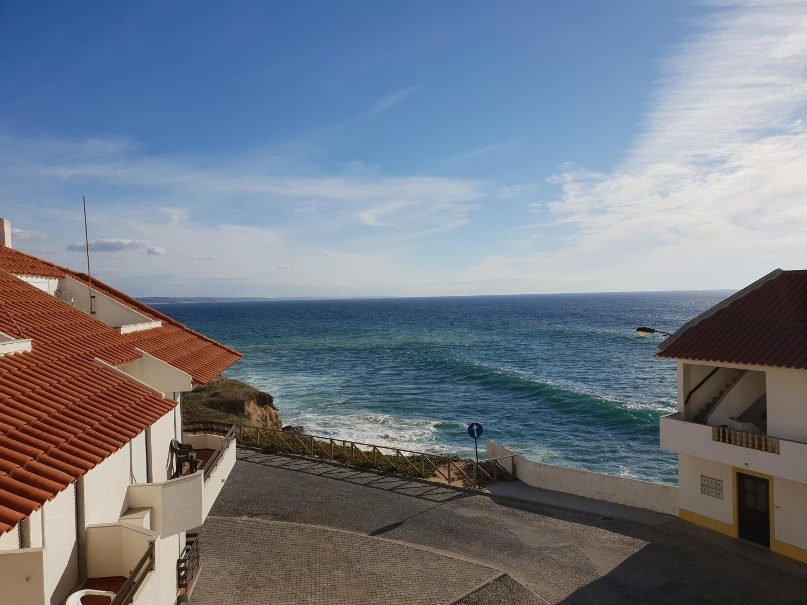

01 / 05
A sala e a cozinha
Teto de madeira, claraboia e portas de vidro para o terraço.

Teto de madeira inclinado, janelas abertas ao céu e um terraço sobre o Atlântico.
01 / 05
Teto de madeira, claraboia e portas de vidro para o terraço.
02 / 05
Mesa de jantar, sofá-cama e o sol a entrar pela claraboia.
03 / 05
Cama de casal e, por cima dela, a janela de teto.
04 / 05
Privativa, com duche e azulejo verde.
05 / 05
Cadeiras de madeira e o mar à frente.
De dia
Do terraço vê-se a costa, e a praia fica a cerca de 150 m.
De noite
A cama fica mesmo por baixo da janela de teto.